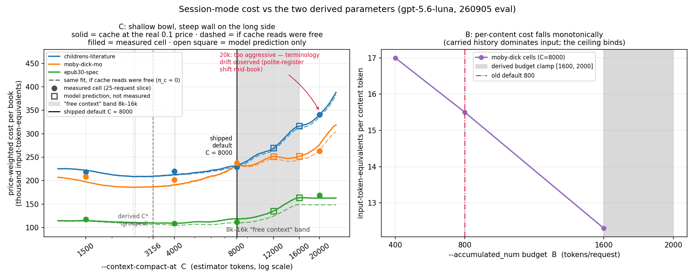
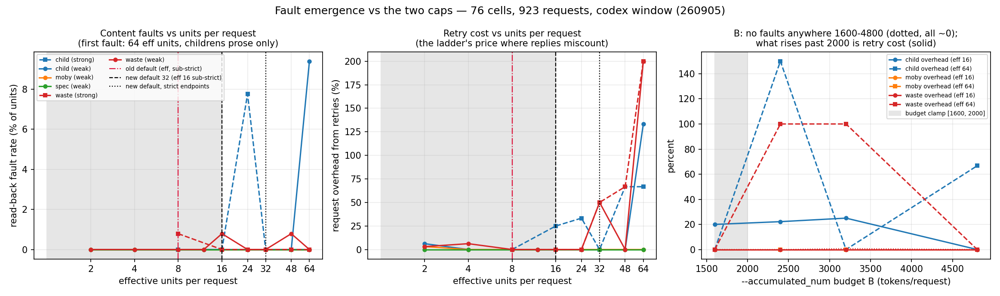
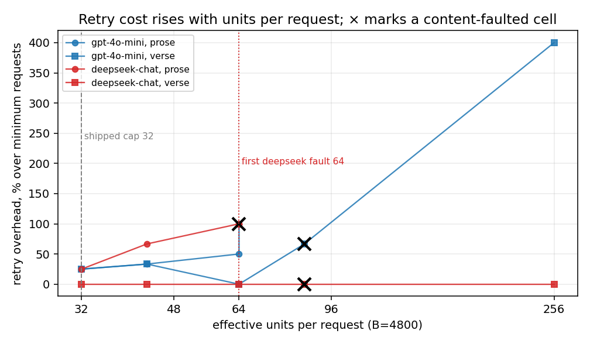
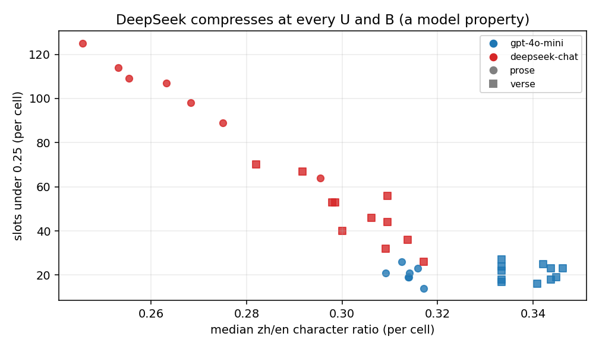

Session grouping: how it batches, and where the defaults come from
A measurement report, September 2026. This documents (a) the grouping
strategy plan mode uses to batch translation units, (b) the paid
evaluation (18 runs, gpt-5.6-luna, 3.27M tokens, three books from
epub-samples) that the session-mode
defaults for --accumulated_num and --context-compact-at come
from, and (c) the follow-up fault-emergence sweep (76 cells, 923
requests, four books, two models) that the --max-batch-units default is
derived from — plus how to pick these parameters for your own endpoint
(§7). Raw artifacts (per-cell logs, handoff reports, bilingual epubs,
ledgers) live outside the repository; every number used below is
reproduced in this page.
1. The grouping strategy
Plan mode (--model_list-independent; entered automatically for API
backends that pass its gates) replaces the one-request-per-paragraph loop
with token-budget batches:
- The book's translatable units are grouped, in document order, into
requests of at most 32 units (16 on endpoints without a strict
JSON-schema verdict — see §6) and at most B tokens of source text
(
--accumulated_numis B;--max-batch-unitsis the unit cap). Nothing is split mid-unit; a unit larger than B travels alone. - Inline markup inside a unit (links, emphasis, spans) is replaced by
numbered markers
⟦tag1⟧…⟦tagN⟧before translation and restored after, so the model never sees raw HTML and cannot damage it. - Each request asks for structured output: a JSON object whose entries echo each unit's id next to its translation. The id echo is what makes a many-unit answer verifiable — a reply that drops, merges or reorders units fails alignment checks instead of silently shifting every translation one slot.
- Backends differ in what they enforce, so there is a capability
ladder: JSON schema →
json_object→ delimiter-separated → plain prompt, probed once per endpoint and remembered. A batch whose reply cannot be aligned is retried down a halving ladder (32 → 16 → … → 1 unit), so the worst case degrades to the old per-unit behaviour rather than to a broken book. - With
--use_context sessionthe batches share one rolling conversation. When the carried history reaches C estimated tokens (--context-compact-at), the translator asks the model for a handoff report — names, register, terminology decisions so far — and starts a fresh window seeded with it. The report behaves as an accumulating terminology ledger, which is why short windows do not cost consistency (measured below).
The question the eval answers: what should B and C default to, and does a short C damage translation continuity?
2. Evaluation design
| phase | cells | what it measures |
|---|---|---|
| 0 | 3 books at stock defaults | calibration: per-request overhead F, JSON wrapper j, handoff prompt F_h, report size K |
| 1 | C ∈ {1500, 4000, 8000, 20000} × 3 books, B=800 | the cost-vs-C curve |
| 2 | B ∈ {400, 1600} on moby-dick (800 from phase 1) | the cost-vs-B curve |
| 3 | one full book at the solved optimum (B=1088, C=2500) | out-of-sample validation |
Books: childrens-literature (literary prose, recurring character
names), moby-dick-mo (long novel chapters), epub30-spec (short,
repetitive technical units — the cache-friendly extreme). Every cell:
official OpenAI endpoint, gpt-5.6-luna, --language zh-hans,
--use_context session, cell sizes chosen so each run makes ~25
requests.
3. The measurement ledger, field by field
One row per run (ledger.tsv in the raw artifacts):
| field | meaning |
|---|---|
run_id |
phase and cell, e.g. p1-moby-C4000 |
book |
epub-samples volume |
B |
--accumulated_num: source-token budget per request |
C |
--context-compact-at: history size (estimator tokens) that triggers compaction |
test_num |
--test_num: number of translation units in the cell (not requests — cell sizing replays the batcher offline) |
tokens_in |
billed prompt tokens, summed from the API's usage |
tokens_out |
billed completion tokens |
tokens_cached |
cached_tokens — a subset of tokens_in served from prefix cache at a 0.1 price weight; never add it to tokens_in |
requests |
translation requests issued |
compactions |
compaction seams crossed |
exit |
process exit status |
One honesty note: at eval time the built-in meter did not count the compaction turns themselves (a defect the eval found; fixed since — they could be up to 38% of true cost at C=1500, i.e. the meter looked best exactly where it lied most). All totals below are metered cost plus the reconstructed compaction turns.
Price weighting. Costs are stated in input-token-equivalents:
(tokens_in − tokens_cached) + 0.1·tokens_cached + 4.0·tokens_out,
matching the vendor's uncached-input : cached-input : output price ratio
of 1 : 0.1 : 4.
4. The cost model, symbol by symbol
Per request, session mode:
cost/request = E + c_h·C/2 + (g/C)·(F_h + π_o·K)
| symbol | fitted value | meaning |
|---|---|---|
E |
— (per book) | fixed payload: prompt overhead + the batch itself; has no C in it |
F |
104 | per-request prompt overhead, tokens (system + instructions) |
j |
11.3/unit | JSON wrapper cost of the structured batch (measured at the then-default 16 units) |
C |
free variable | compaction trigger; the average request carries ~C/2 history |
c_h |
0.65–1.08 | billed price of one carried history token: ((1−α) + α·0.1)·r |
α |
0.04–0.47 | fraction of carried history served from cache; rises with C (each compaction destroys the cache prefix — the force that opposes short C) |
r |
1.12–1.18 | billed tokens per estimator token (the trigger counts a 4.0 chars/token estimate; the bill counts the real tokenizer) |
g |
645–1245 | history growth per request, estimator tokens; multiplies the compaction rate — this, not E, is what survives the derivative |
F_h |
72 | the compaction prompt |
K |
538 | mean handoff report length (139 reports) |
π_o |
4.0 | output price relative to uncached input |
ρ |
1.41–1.74 | zh-hans output tokens per source content token |
Differentiating in C gives the optimum:
C* = √( 2·g·(F_h + π_o·K) / c_h )
5. Results

C — a shallow bowl with one steep wall, on the long side. Total price-weighted cost per book:
| book | C=1500 | C=4000 | C=8000 | C=20000 | C* solved |
|---|---|---|---|---|---|
| childrens-literature | 218.8k | 220.1k | 228.4k | 340.7k | 2512 |
| moby-dick-mo | 207.9k | 201.7k | 237.2k | 263.3k | 2191 |
| epub30-spec | 117.2k | 108.4k | 111.9k | 169.0k | 1580 |
Flat within 0.6–3% across [1500, 4000] on all three books — inside single-run noise, and all three solved C land in that region. C=8000 sits 9–25% above C; C=20000 costs up to 56% more. Being wrong short is nearly free; being wrong long is not.
The figure's curves are the §4 cost model evaluated on the same finite 25-request run as the cells (window sawtooth simulated, measured per-C α interpolated), so the dots sit on their own curves; the open squares at C=12000 and C=16000 are model predictions, not measured cells (later runs measured them and confirmed the predictions; the follow-up sections live in the full report). The dashed companion curves re-price cache reads at zero, and they answer a question we had wrong until we ran it: the long-C wall barely moves (−2 to −8 points) even if cache were free, because at these budgets only 0.1–0.2 of the carried history is cached at all on prose. The wall is a token-count effect, not a cache-price effect — a free-cache endpoint does not buy you a long C.
Why the default is pinned at C=8000 anyway. The band was first argued on continuity — that a typical run makes 0–1 compactions inside it. The measured band cells (full report, §13) corrected that: on this same 301-unit cell the band compacts 4 / 3 / 2 times at 8k / 12k / 16k, so the 0–1 reading holds only for runs several times shorter, and buying the two fewer seams costs +21% to +33% (inside the +10% to +50% over C this section already conceded). What survives measurement is the price argument: C=8000 was the cheapest budget in every measured-band model, monotonically, and stays at most ~25% over the optimum on the worst book, which we treat as inside the don't-care zone (<30% on a single run is noise-adjacent), while 20000 is past it — that cell showed the grid's only drift and* costs up to 56% more. Pinning one number also beats deriving one: the derivation moved the default by less than the don't-care zone, at the price of a per-run moving target.
B — the ceiling wins. At fixed C, input cost is nearly flat in B (129k / 132k / 147k at B = 400 / 800 / 1600) because carried history, not content, dominates the prompt; content per request rises linearly. So cost per translated content token falls monotonically: 17.0 → 15.5 → 12.3. What binds is the unit cap and batch-alignment risk (one misalignment at B=1600, recovered by the halving ladder), not book statistics — which is what the follow-up sweep in §6 measured directly.
Continuity survives short C. The full-book validation run at C=2500 crossed 44 compaction seams with zero terminology breaks across 1012 nodes (皇帝 62/62, 夜莺 38/38, 公主 34/34, 安徒生 12/12). The only drift found anywhere in the grid — a 你→您 register shift — was in the C=20000 cell, a within-window drift in the run with almost no seams. The handoff report re-states the accumulated name table at every seam; one report even self-corrected a defect it noticed.
Out-of-sample validation. The full childrens-literature run at (B=1088, C=2500) hit the predicted request count exactly (82/82), landed within −6.2% of predicted total cost, and was cheaper per content token (11.7) than every grid cell (13.1–20.4).
6. Where the unit cap comes from
The first eval anchored the cap at a conservative 16: a 210-request
degradation study across five endpoints had seen every request-level
fault live in its 50-unit bucket while 16 stayed clean, so 16 was a
safety margin, not a measurement. The follow-up sweep measured the
actual emergence: 76 cells / 923 requests over four epub-samples books
(literary prose, a long novel, a spec, verse), sweeping the effective
unit count to 128 and B across 1600–4800, on a deliberately weak model
(gpt-5.4-mini) with a stronger default as cross-check, every cell
read back from the produced epub rather than trusted from its log.

- First content fault at 64 effective units per request, literary prose only (9.4% of units on one book); the other three books were clean through 64.
- Content per request, not the unit count, carries the risk: 4705 source tokens across 48 units translated clean, 3563 tokens across 64 units faulted, and 64 units of short lines (600–1100 tokens) were clean. The token budget B is what actually bounds content.
- The weak model held the reply format better than the strong one (2 alignment recoveries in 9 cells vs 5 in 6): misalignment is format compliance, not competence, so a cap derived from the weak model alone would sit too high.
- B was fault-free across the whole 1600–4800 range; what rises past ~2000 is retry cost (+150% request overhead at B=2400 with large unit counts), which is why the derived default keeps its ceiling.
- The sweep also caught a real corruption path — a one-slot-shifted reply that survived reconciliation could deposit marker tokens into visible prose — now fixed: wrong-slot marker evidence sends the batch down the halving ladder instead of being written.
The default is set at half the measured emergence: 32 units, with the existing halving to 16 on any endpoint that does not verify a strict JSON schema — exactly the endpoints where reply miscounts were observed. Measured retry overhead at those defaults is 0–25%.
7. Choosing the parameters for your endpoint
Everything below is a default-tuning guide; leaving all three flags unset is correct on every route: the run probes the endpoint, derives the request budget from its own prompt overhead, and pins the rest.
- Endpoint verifies a strict JSON schema (the official OpenAI API):
the full cap (32) applies and every reply is schema-checked. Nothing
to change — and a weak model is not a reason to lower it: rerunning
both axes on gpt-4o-mini and DeepSeek kept the 32-unit cap at a 2×
margin below the first observable fault (64 effective units) and the
derived budget band fault-free through 4800, so if a run keeps
printing misalignment recoveries, lower
--max-batch-unitsbefore touching the budget. - Endpoint accepts JSON mode but not a strict schema: the run
halves the cap to 16 by itself. Do not raise
--max-batch-unitsto undo it — the halved tier is where miscounted replies were actually observed. - No structured output at all (the ChatGPT-plan/codex route, many resellers and proxies): translation uses the delimiter method and the plan is classified over a plain conversation; the effective cap is 16 and the halving ladder absorbs miscounts. Trust the startup narration lines — they name the tier the probe found.
- Resellers and routers: the degradation study compared the official endpoint against a random domestic router serving the same model on byte-identical batches — zero structural faults on either side; the router's only measured tax was 2.4–6× latency. The same router serving an anthropic-family model over the openai wire format returned 0/30 schema-valid replies (fenced code blocks, unescaped quotes) while the translations inside were fine: wire format, not model quality, is what degrades on a router, and the probe + ladder exist to absorb exactly that. So: don't pre-shrink the caps for a router; let the probe grade it.
- Weaker or smaller models: don't pre-emptively lower
--max-batch-unitseither — the sweep's weak model held format better than the strong one. Lower it (to 16, then 8) only when a run prints the misalignment hint (N misaligned batches this run — consider a lower --max-batch-units or --accumulated_num), which appears from the third recovered batch on.
The weak-model rerun in one picture — what a raised unit cap costs is retries first, faults later, so the cap is the knob to lower and the budget is not:

A caveat that belongs to model choice rather than to any knob here: DeepSeek compresses aggressively at every unit cap and budget (median zh/en character ratio 0.25–0.31 against gpt-4o-mini's 0.31–0.35), so short translations on that model are the model, not a grouping fault:

---accumulated_num: leave unset (the derived band — see the
superseding note below for the shipped numbers).
The whole 1600–4800 range measured fault-free at the 32-unit cap —
on the weak-model rerun too — and raising it toward 4800 produced no
faults but spends margin for flattening per-content savings.
- --context-compact-at: leave unset (§5, §8). Set it lower only if
squeezing the last ~10–25% of session cost matters more to you than
having the fewest window seams; set it higher never — past 16000 the
cost wall is steep and the only drift we ever observed lived in the
long-window cell.
Superseded, 260907. The shipped defaults below were lowered by owner ruling after this eval: unit cap 32 → 16 (sub-strict 16 → 8), B floor/ceiling 2400/3200 → 1200/1600 (sub-strict floor 1200 → a typed 800). C went 8000 → 8192 — unchanged in substance: it was briefly set to 4096 and put back after this branch's price-tag eval measured +27.3% session cost at 300 units. The raise restored the compaction count (19 → 9, against 8 at the old defaults) but not the bill, which measured +39.8% — the cost is the halved B multiplying requests, each re-reading the carried history, not the seams. C is held high for continuity, knowing that. Nothing in this report's measurements changed — the new numbers sit below the range measured here, on purpose. The ruling traded the per-content-token savings this section recommends for margin, on the grounds that schema support is an endpoint property and says nothing about whether the model behind it can hold a long enumeration together, and that a faulted slot is a wrong book rather than an expensive one. Read the constants in
book_maker/loader/plan.pyandbook_maker/session_context.pyfor which numbers are measured and which are chosen.
The two grouping knobs, and how to adjust them (shipped 260907)
What they are:
--accumulated_numis the per-request token budget: consecutive units of any length share one request until the next unit would push it pastNestimated tokens. Untyped, every plan run derives it from its own prompt overhead —1200with the stock prompts, up to1600under a fat custom--prompt, and a flat800on an endpoint without a strict-schema verdict — except session runs (codexincluded), which keep the un-halved value. The run narrates the number and the route class it chose at start. A typed value always wins, un-halved;1turns grouping off entirely; interrupted runs checkpoint and--resumeeither way.--max-batch-unitsis the unit-count cap behind that budget: the most units one request may carry regardless of how short they are. Default16; an endpoint that verifies JSON mode but not a strict schema carries half automatically (effective8) — that half is where reply miscounts actually live, so don't undo it by typing the double.
Why two knobs: a batch is risky by segments × output length — how long an enumeration the model must hold across its own generation. The token budget bounds the length axis and is the primary limit; the unit cap bounds the segment axis and is the safety net behind it (§6: 4705 tokens in 48 units was clean while 3563 tokens in 64 units faulted).
When to lower them: the run telling you so is the only trigger
worth acting on. From the third recovered batch a run prints
N misaligned batches this run — consider a lower --max-batch-units or
--accumulated_num; halve the unit cap first (16 → 8, then 4) —
the sweep showed a raised cap costs retries before it costs faults, so
lowering it buys the retries back. Don't pre-shrink for a weak model or
a router: the weak arm held format better than the strong one here,
and router degradation is schema support, which the probe and ladder
absorb on their own.
When to raise them: cost only. Per-content-token cost falls
monotonically with request size (15.5 input-equivalents at B=800
against 12.3 at 1600), so bigger requests are cheaper — but the shipped
defaults are owner-set safety margins sitting deliberately below the
measured-clean range, and raising spends that margin: only 1600–4800
was measured fault-free, only at the old 32-unit cap, and only on the
evaluated models. Values past the defaults are the operator's own
risk. Never raise the unit cap past 48: content faults emerged at 64
effective units, and the token budget bounds content either way.
8. The shipped defaults
Session-mode defaults only; an explicit flag always wins. They are
equations, not constants, because prompt overhead is user-customizable
(--prompt) and measured at run start:
B_default = clamp( 3·F, 1200, 1600 ) # F = measured prompt overhead
C_default = 8192 # pinned, every session run
(As shipped since the 260907 ruling. What this eval measured, and what
the defaults were when it was written, was clamp(3·F, 2400, 3200) and
C = 8000; the paragraphs below argue for those. They are kept as the
record of the measurement, not as a description of the current defaults.)
The old floor was half the largest B measured fault-free (4800, at the 32-unit cap, weak models included); the old ceiling was a directly measured clean rung, 1.5× under that edge. With the stock prompts F ≈ 104–111, so B defaults to the floor either way. F does not appear in a compaction optimum (it drops out of the derivative); prompt growth reaches C only through B.
C is pinned, not derived — a deliberate simplification over the earlier derived value (~3156). The measured case for it: the per-book optima solve to 1580–2512 and the 1500–4000 region is flat within single-run noise, but everything up to ~16000 stays inside a <30% penalty — a don't-care zone for a single book run — while 8000 measured as the cheapest budget outright in every measured-band model (the 0–1-compactions reading of the band was corrected by those runs: the 301-unit cell compacts 4/3/2 times across it), at a 9–25% premium over C (§5). Terminology held across 44 seams in the validation run and the only drift ever observed was within* a long window, so the seams 8000 still makes are the cheap side of that trade. A pinned number also never moves between runs, which the derived one did — by less than the noise band it sat in, which is exactly why it did not earn its complexity.
9. Reproducing a cell
python make_book.py --book_name childrens-literature.epub \
--model gpt-5.6-luna --key "$OPENAI_API_KEY" \
--use_context session --language zh-hans \
--test --test_num 301 --context-compact-at 4000 --accumulated_num 800
Leave --context-compact-at and --accumulated_num unset to get the
defaults; the run narrates them
(session: compacting at 8192 estimated tokens (the default;
--context-compact-at overrides) — it said 8000 when this eval ran).